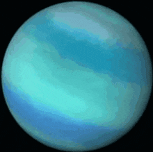

Cosmo: Up the volume, Zeta.
Warning: Music is entering hearing-damage limits.
Cosmo: Just do it.
Cosmo: *Chitter*
Cosmo: You know… I've never felt warmth since I was on Earth.
Cosmo: I keep calling out to the limitless beyond but I keep receiving nothing.
Cosmo: It's so dark.
Cosmo: And to think I wanted this. When I walked on the grass, I felt its breeze. The pull that brought it from the sky unfurled it against the green. Never once did I mention it… But I did think something greater was at play.
Cosmo: Some 'figure' that wanted all this to happen. They picked up the seeds and planted it, waited for weeks, and then brought a breeze that I would walk through. Before I got the serum, it was felt but there were no words to explain it.
Cosmo: I know basic oceanography and botany to know better now, of course. But that only brought on more questions.
Cosmo: I've had dreams, Zeta.
Cosmo: Dreams wilder than I think even the humans back home have. Befriending cats, seeing other squirrels in physical space, even mundane moments turned vibrant. One moment I was snatched in the pod and the next I felt sunlight. I stopped thinking they're dreams too. They could only be memories.
Cosmo: Memories brought clarity through consciousness. Answers fulfilled. There was a bridge between the incredibility of being alive and the logic that completed the puzzle. At least to a squirrel. At least to me.

Cosmo: Loneliness. That's the word I think of now. Even if I stood before my parents, I would be speaking gibberish wrapped in Kramer hand motions. I'm the only squirrel in this lonely area of the galaxy, too dumb to understand the greater movements but too smart to feel the grass again.
Cosmo: Maybe Raccoon was smart enough to know it. Even in a short moment, an eternity marched.
Cosmo: He got the best end of the stick.
Cosmo: And I'm stuck here.
Cosmo: *Chitter*
Cosmo: It's all fate. Ain't that right, Zeta?
Cosmo: …
Error B4A1325JM369.
Cosmo: I know, Zeta. Emotions are hard.
Error B4A1325JM369.
Cosmo: Stop talking. Let me think.
Inway error. Maintenance is required.
Cosmo: What are you talking about?
Error Beta 4 Alpha 1 3 2 5 Juliett Mike 3 6 9.
Cosmo: Let me see the command panel.
Cosmo: …
Cosmo: What the hell? Why's there a dot on the screen? It's really grainy.
Causeway 369 is compromised.
Cosmo: Speak to me in English!